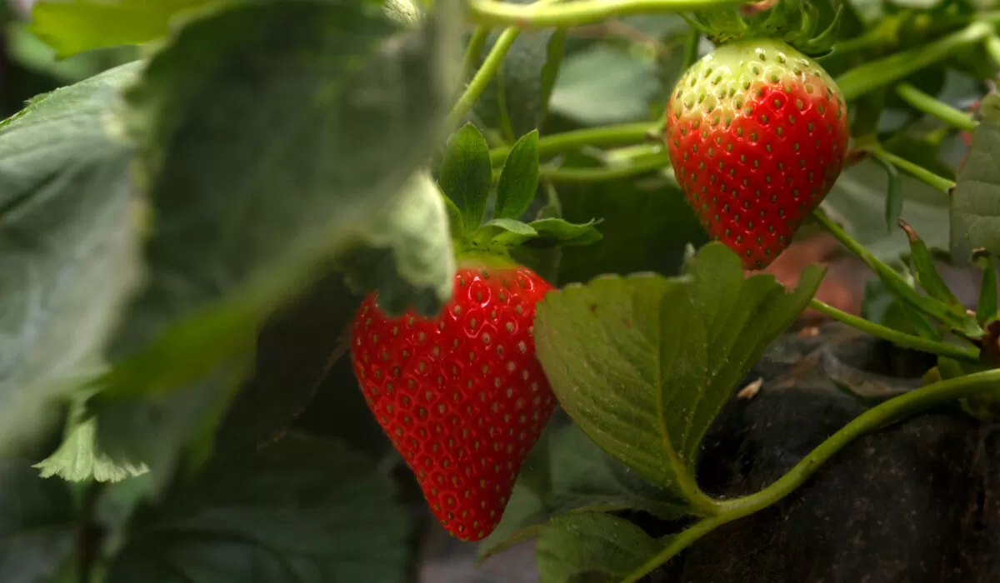
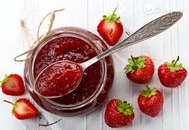
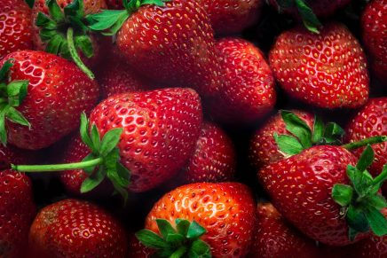
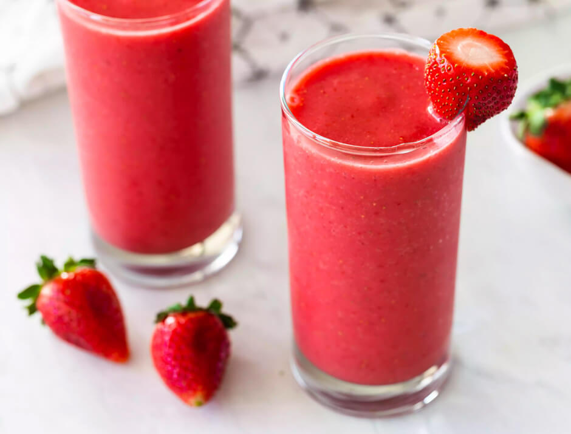
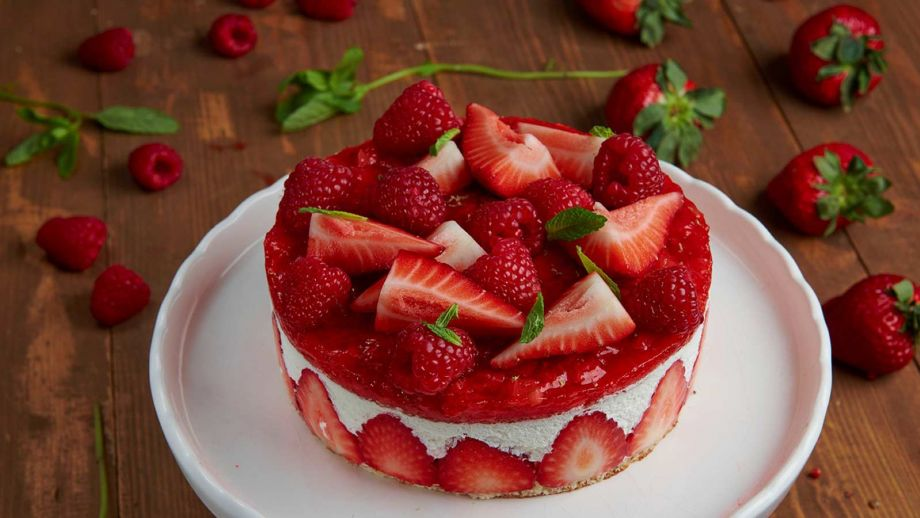
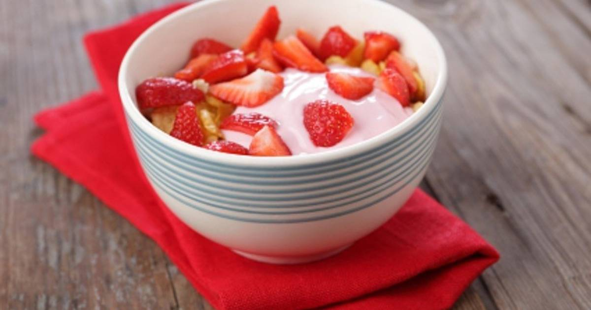
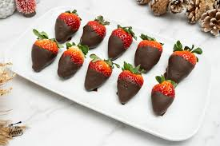

Nuestros Productos

Fresa Natural
Fresas frescas, cultivadas sin pesticidas. Perfectas para postres y batidos.

Mermelada Artesanal
Hecha 100% con nuestras fresas. Sin aditivos, puro sabor.

Fresones XXL
Gigantes, dulces y jugosos. Ideales para sorprender.

Zumo de Fresa
Exprimido directamente de nuestras fresas, sin azúcares añadidos.

Helado de Fresa
Delicioso helado artesanal con trozos de fresa natural. Ideal para el verano.

Tarta de Fresas
Bizcocho esponjoso con relleno de fresas frescas y nata. Un clásico irresistible.

Yogur con Fresas
Yogur cremoso combinado con fresas naturales. Fuente de energía y sabor.

Fresas con Chocolate
Fresas bañadas en chocolate negro. El equilibrio perfecto entre dulce y ácido.